아무것도 모르는 상태에서 시작해서
8라운드(40분) 만에 탐색 효율을 2.4배 끌어올린 기록.
2026년 3월, 전 Tesla AI 디렉터 Andrej Karpathy가
GitHub에 공개한 프로젝트. 한 달 만에 별 6만 개.
원래 AI 모델을 학습시키려면 사람이 직접 설정을 바꾸고,
실험을 돌리고, 결과를 확인하고, 다시 바꾸는 걸 반복합니다.
Karpathy는 이 과정 전체를 AI가 혼자서 반복하게 만들었습니다.
사람이 퇴근한 뒤에도 AI가 밤새 실험을 돌립니다.
결과가 나아지면 유지하고, 아니면 되돌리고, 다시 시도.
8시간 동안 약 100번. 아침에 출근하면
어젯밤보다 성능이 개선된 결과가 기다립니다.
사람의 역할이 바뀝니다.
직접 실험하는 사람에서 → "AI에게 뭘 시도하라고 지시하는 사람"으로.
Autoresearch 루프
핵심은 "바꾸고 → 측정하고 → 판단하는" 루프를
사람 없이 자동으로 계속 돌린다는 것.
Shopify CEO Tobias Lutke가
자사 검색 시스템에 autoresearch를 적용했습니다.
퇴근 전에 켜놓고, 다음 날 아침에 결과를 확인.
8시간 동안 37번의 자동 실험이 돌았고,
절반 크기의 작은 모델이 기존보다
성능 19% 향상된 채로 기다리고 있었습니다.
"몇 달간 팀이 못 한 걸 하룻밤에 해냈다"
이후 마케팅 에이전시들이 광고 카피와 랜딩페이지에,
미디어 회사들이 검색 알고리즘에 같은 방식을 적용하기 시작했습니다.
"바꾸고 → 측정 → 판단" 루프는 어디에든 적용 가능하다는 게 증명된 것.
우리는 이걸 TikTok 콘텐츠 제작에 적용했습니다.
AI가 콘텐츠를 만들고 → 올리고 → 반응 측정 → 개선을 하루 2번 자동으로.
하지만 한 가지가 빠져 있었습니다 —
Shopify 실험 결과
TikTok에 같은 방식을 적용
빠진 것
자기 콘텐츠만 분석. 지금 TikTok에서 뭐가 잘 되는지는 모름.
자기 데이터만 보면 "왜 안 되는지"는 알 수 있지만
"지금 뭐가 되고 있는지"는 알 수 없습니다.
72만 좋아요를 받는 포스트가 어떤 형식인지,
어떤 화가를 다루면 반응이 좋은지,
경쟁자들은 어떤 전략을 쓰는지.
그래서 Scout를 추가했습니다.
AI가 직접 TikTok을 열고, 잘 되는 콘텐츠를 찾아서
그 전략을 분석하고, 우리 제작에 반영하는 단계.
Karpathy의 autoresearch가 "밤새 코드를 개선하는 루프"라면,
Scout는 "5분마다 TikTok을 훑고, 매번 더 잘 훑는 법을 배우는 루프"입니다.
다음 슬라이드부터 그 학습 과정을 보여드립니다.
Before vs After
BEFORE
자기 데이터만 보고 다음 콘텐츠 기획
"왜 안 되는지"는 알지만 "뭐가 되는지"는 모름
AFTER
Scout가 TikTok 직접 탐색
→ 잘 되는 콘텐츠의 전략 분석
→ 우리 콘텐츠에 적용 → 측정 → 반복
사람이 TikTok을 보듯이 — 검색하고, 탭하고, 스크롤하고,
좋아요 수를 확인합니다. 다만 사람 대신 AI가 합니다.
Playbook은 매 라운드가 끝날 때마다 AI가 직접 쓰는 노트입니다.
"이번에 뭐가 됐고, 뭐가 안 됐고, 다음엔 어떻게 하자"를 기록하면
다음 라운드의 AI가 그 노트를 읽고 더 나은 판단을 합니다.
AI가 조작하는 실제 화면
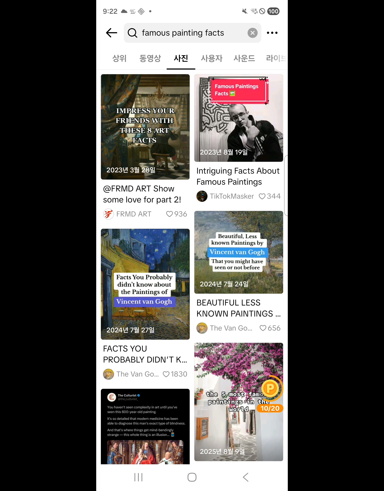
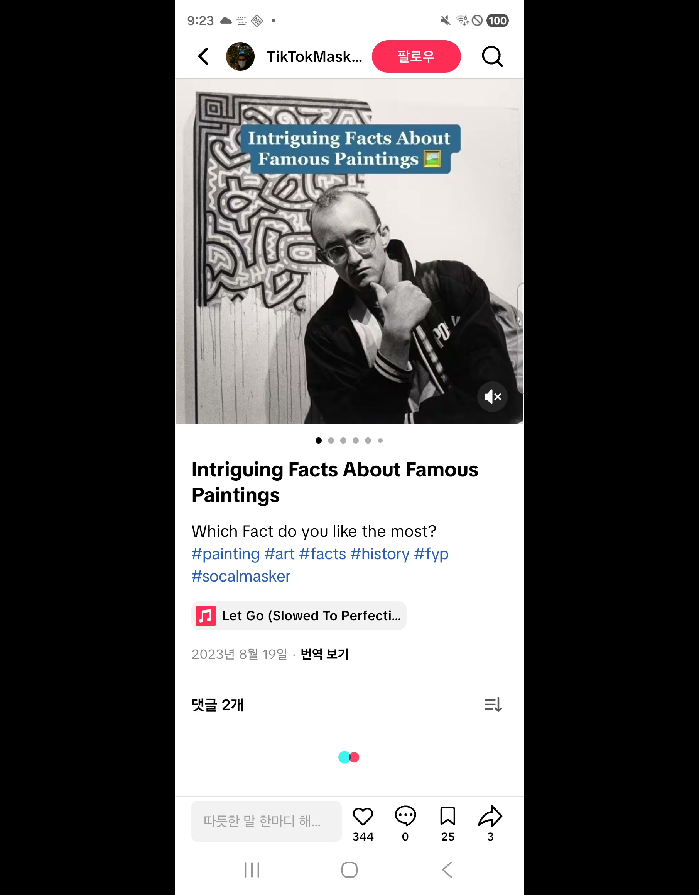
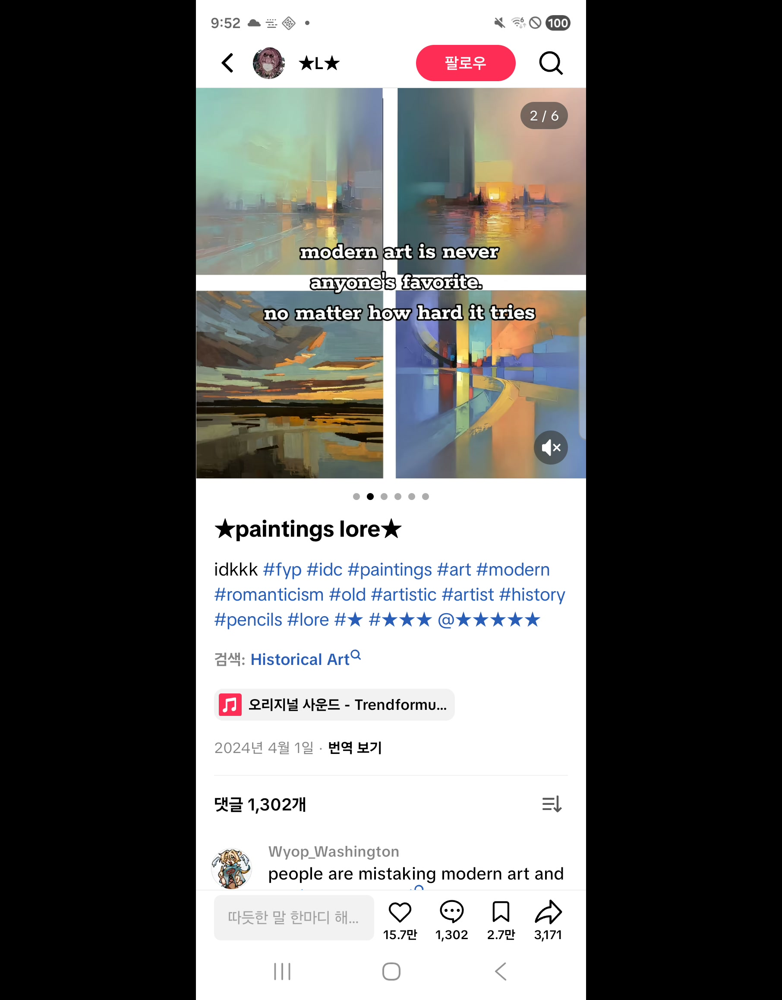
"famous painting facts"를 검색해서 사진 탭을 찾고,
포스트를 열어보는 기본 흐름을 처음으로 익혔습니다.
하지만 두 가지 문제를 발견:
1. 같은 포스트를 반복해서 열게 됨
포스트를 보고 뒤로 돌아오면 목록이 처음으로 리셋됨
2. 검색어가 2개뿐
다양한 콘텐츠를 만나지 못함
Playbook에 기록:
"뒤로 돌아오면 목록이 리셋된다."
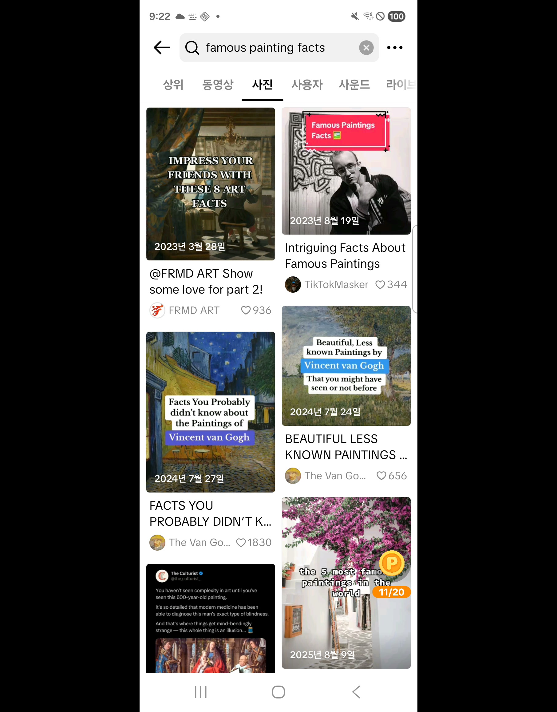
R1의 Playbook을 읽고 검색어를 3개로 늘렸지만,
R1보다 오히려 적게 찾았습니다.
R1의 중복 문제에 더해 새로운 문제 2개를 발견:
좋아요·댓글·공유 수를 읽을 수 없음
화면에는 "30.8만" 같은 숫자가 보이는데,
AI가 데이터로 가져오면 전부 빈 칸.
"사진" 탭의 위치가 R1과 달라짐
R1에서 기록한 좌표를 눌렀더니 엉뚱한 탭이 열림.
미해결 문제 목록
1. 같은 포스트 반복 열기 (R1에서)
2. 좋아요 수 못 읽기 (새로 발견)
3. "사진" 탭 위치 변동 (새로 발견)
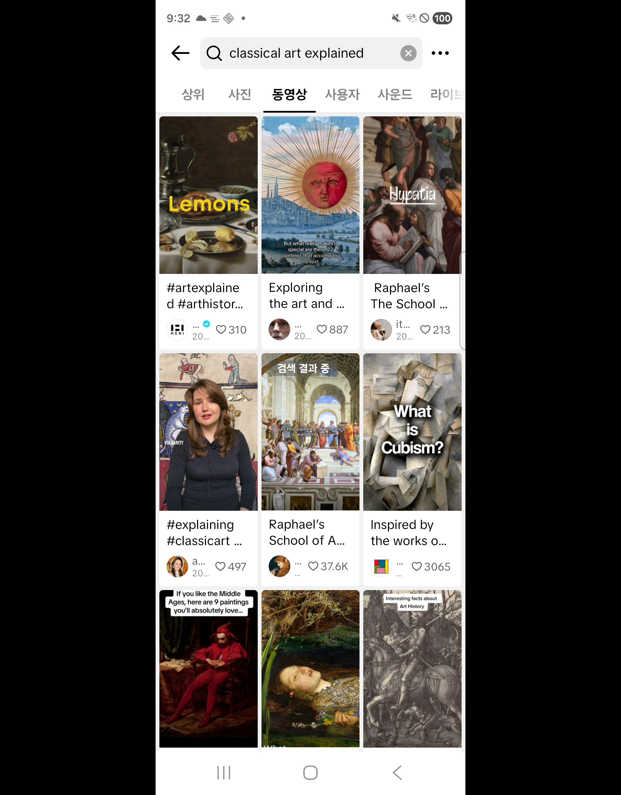
R2의 Playbook에 "좋아요 수를 읽을 수 없다"는 문제가 기록되어 있었고,
이번 라운드에서 XML 구조를 분석해서 해독에 성공했습니다.
문제 현황
1. 같은 포스트 반복 열기 — 아직 미해결
2. 좋아요 수 못 읽기 — 해결!
3. "사진" 탭 위치 변동 — 아직 미해결
?
좋아요 수 못 읽음
30.8만
코드 해독 성공
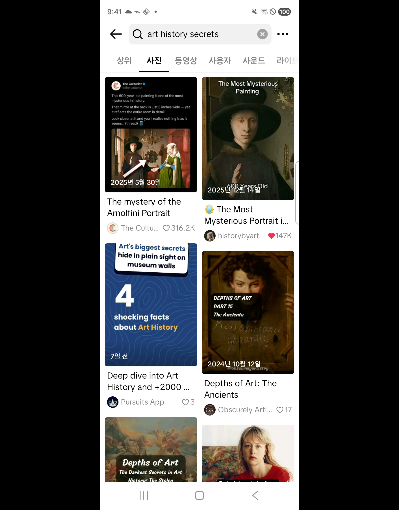
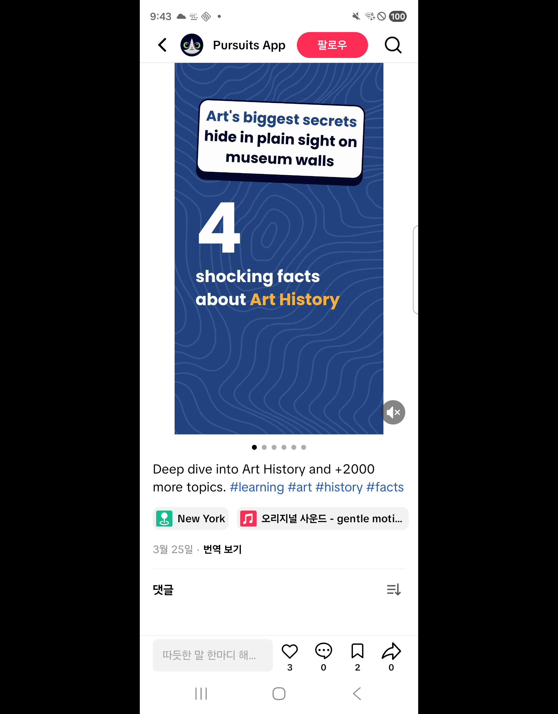
R1~R3의 문제들이 이번 라운드에서 모두 해결됨:
같은 포스트 반복 열기 → 제목을 기억해서 중복 건너뛰기
좋아요 수 못 읽기 → XML 코드 해독으로 완벽히 수집
"사진" 탭 위치 바뀜 → 매번 XML에서 동적으로 찾기
문제를 다 해결하고 나니 전략을 바꿀 여유가 생겼습니다.
6개 검색어를 빠르게 돌아가며 탐색 — 넓게 훑는 방식.
Playbook에 기록:
"검색어 하나당 2~3개만 보고 다음으로.
깊게 파기보다 넓게 훑는 게 훨씬 낫다."
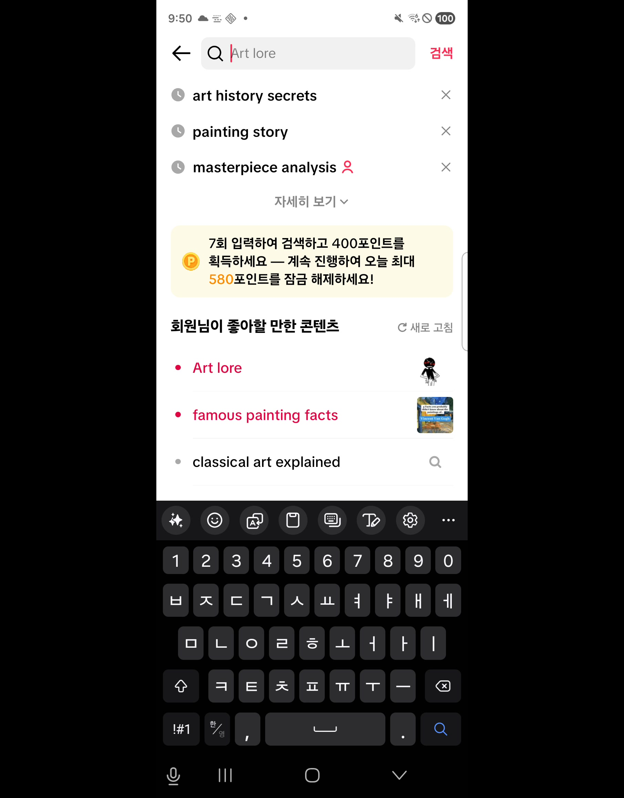
"impressionist painting", "Dutch Golden Age art"처럼
미술 시대 이름을 검색하면 결과가 전부 고전명화라는 걸 발견.
"art" 같은 넓은 단어는 현대미술, 일러스트도 섞이지만
"impressionist painting"을 검색하는 사람은
이미 고전명화에 관심 있는 사람뿐이라
검색 결과 자체가 이미 걸러진 상태인 것.
Playbook에 기록:
"검색어가 구체적일수록 결과가 정확하다.
'famous painting'보다 'impressionist painting'이 2배 효율."
R5 — 실제로 찾은 포스트들
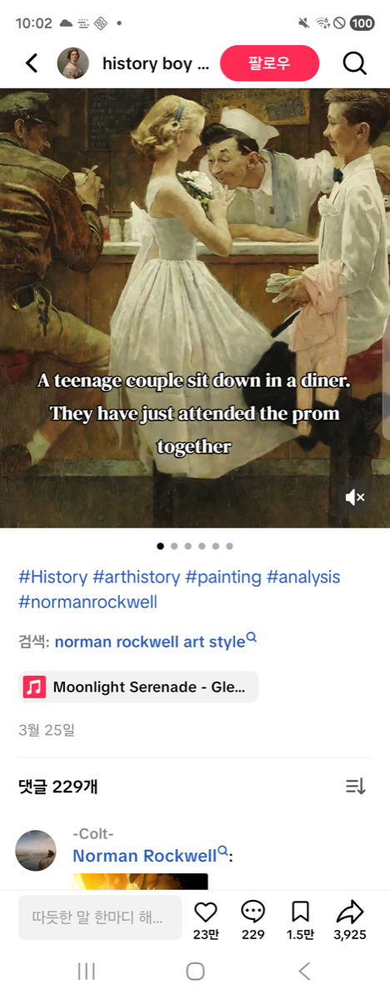
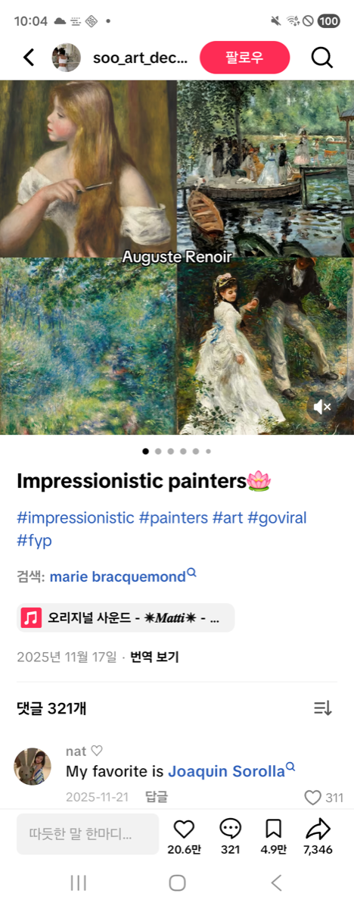
두 검색어 모두 100% 적중
검색 결과 전체가 고전명화 콘텐츠
R5에서 "시대 이름"이 효과적이라는 걸 배웠으니
이번엔 화가 이름으로 검색해봤습니다.
"Caravaggio painting" → 결과가 전부 카라바조 작품.
미켈란젤로, 보티첼리, 카라바조, 베르메르...
어떤 화가 이름을 넣든 100% 적중한다는 걸 확인.
이 공식은 R7, R8에서도 계속 통했습니다.
최종 검색 공식:
"화가 이름 + painting" = 항상 100% 적중.
R6 — 화가 이름으로 검색한 결과
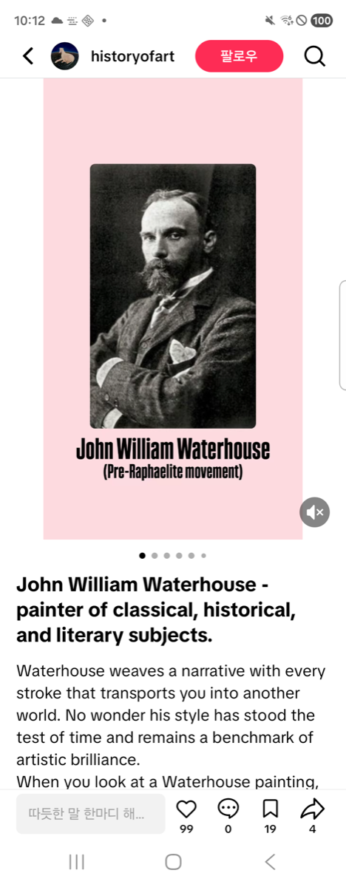
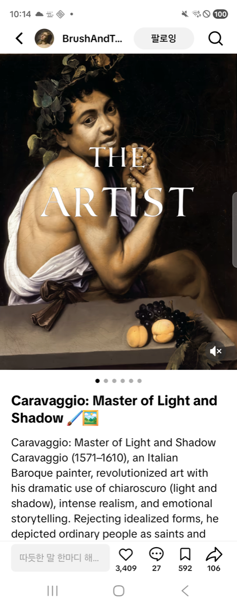
"Michelangelo art"를 검색했더니 72만 좋아요 포스트가 바로 나왔습니다.
"Monet water lilies"처럼 화가 이름에 대표작까지 붙이면 더 정확.
R8에서는 5분 안에 7개 검색어를 전부 소화해서
24개 포스트를 찾았습니다 — R1의 10개에서 2.4배.
최종 공식: "화가 이름 + 대표작" 검색.
예: "Monet water lilies" → 5.9만 좋아요 포스트 즉시 발견.
R7~R8 캡처
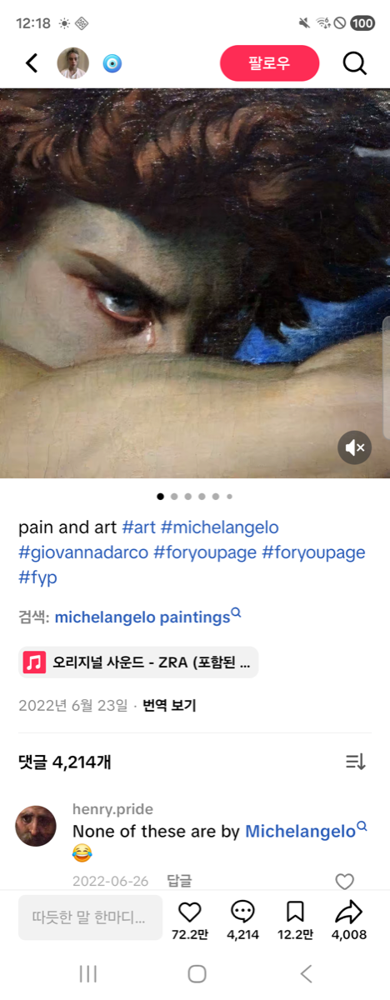
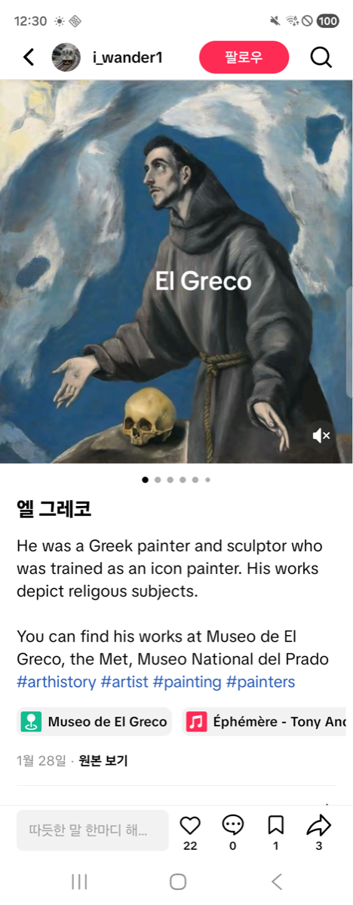
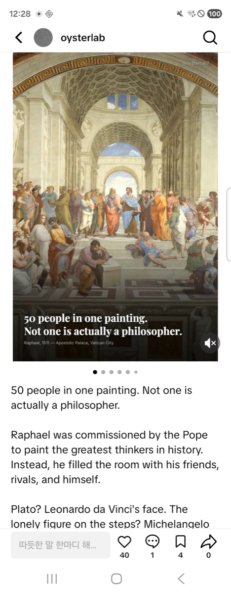
R1에서 10개 → R8에서 24개.
주어진 시간은 똑같이 5분.
달라진 건 쌓인 경험뿐.
R1~R3 기초 — 화면 조작법 익히기, 데이터 읽기
R4 전환 — 검색어를 자주 바꾸는 전략
R5~R6 발견 — "화가 이름 = 100% 적중" 공식
R7~R8 완성 — 5분에 7개 검색어, 24개 수집
Playbook은 처음에 전부 "?"였습니다.
라운드가 지나면서 하나씩 답이 채워졌고,
특히 3번의 결정적 순간이 성능을 크게 바꿨습니다.
각 항목을 클릭하면 AI가 실제로 쓴 Playbook 원문을 볼 수 있습니다.
이 Playbook은 이제 매일 자동으로 돌아가며
트렌드 발견 → 분석 → 콘텐츠 제작까지 연결됩니다.
R8 실제 스카웃 영상 — 5분에 24개 수집